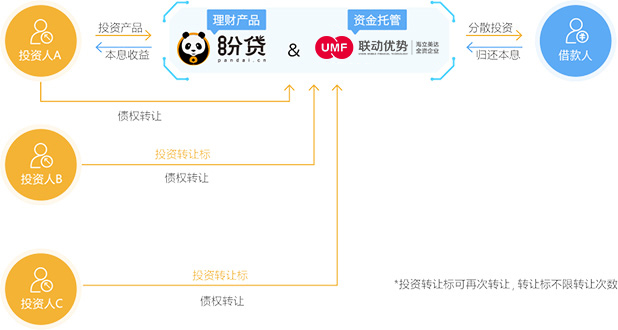

什么是债权转让?
1. 在盼贷网平台上的投资人，将正在进行收款中的债权转让给其他出借者的行为。
2. 盼贷提供债权转让功能的目的：为了解决投资人在借款过程中遇到急用款的情况，通过债权转让回收资金。
3. 盼贷投资人可以投资完整的出借项目，也可以购买债权来进行投资。
债权转让流程

-
为保证债权转让标的能成功购买，购买转让标需开通免密投资功能。
-

转让费用：债权转让的费用在债权转让成功后，在所成功转让金额的基础上按一定比例收取。
-
如果在债权转移过程中借款人还款，那么此次债权转让将被取消，出借人需要重新申请转让自己的债权。
-
“盼贷网”只为出借人提供债权转让的平台和服务，债权转让最终能否成功主要取决于其他出借人是否愿意购买该被转让的债权。
-
出借人申请债权转让后，可在债权转让成功前的任何时间取消该转让申请。
-
在债权转让期间，出借人不能再继续获得其正在转让债权的利息，除非借款人在此期间还款。
-
债权受让人将获得所受让债权剩余期限内的所有利息收益（包括债权转让成功当月借款人尚未偿还的利息）。
-
用户的债权可以分别转让给多个出借人及多次进行转让，每次转让在转让完成时在成功转让金额的基础上收取一定比例的费用。
债权转让注意事项
1、债权转让时将正在进行收款中的债权转让给其他出借者的行为。
2、在债权转让过程中，可能会存在0.01元-0.10元不等数额的误差，这主要是由于复杂的本金.利息以及费用计算等因素造成的。转让债权的出借人和购买债权的出借人一旦参与债权转让，则默认其已认可和了解了上述误差的存在，并愿意承担误差造成的损失。
3、债权转让不会更改借款人的还款计划和还款时间。
4、如果由于没有投资人购买债权而导致出借人的债权转让未成功，盼贷不承担任何责任。
5、”盼贷网”不持有同时也不会购买任何债权，平台只为出借人提供债权转让的交易平台和服务。
6、“盼贷网”有义务向出借人披露债权的贷款类型和详细内容。